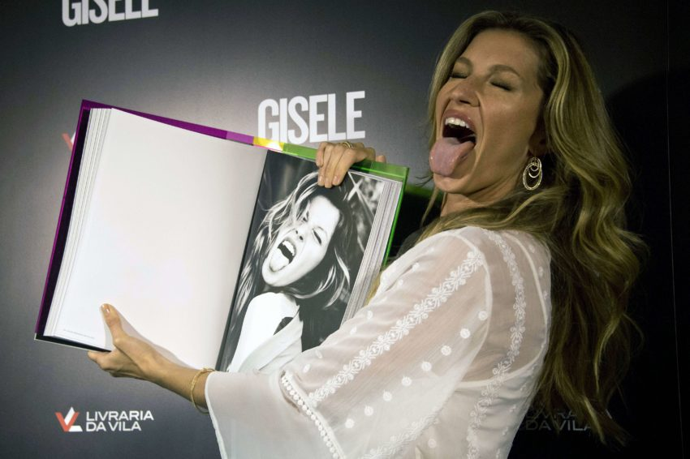

How Gisele survived in a cruelly objectifying business to become the most financially successful model in the world
NEW YORK — “My career was never based on pretty,” one of the world’s most beautiful women was saying recently, straining a listener’s credulity. The woman was Gisele Bundchen. And if what should have seemed disingenuous or else a bad case of false modesty somehow rang true, that is because the listener had heard the tale of the nose.
People in the business often repeat, as an example of the ways in which fashion is deeply disordered, the story of how two decades ago when Bundchen was starting out in a field she has dominated ever since — becoming not just the most highly paid model in the world but the richest, according to Forbes — some misguided types routinely advised her to correct what they saw as a glaring feature “It’s true,” Angela Missoni, creative director of her family company, said last week from Milan. “Gisele did our first campaign with Mario Testino, and we used a beautiful shot, but with Gisele’s hair all across her face.”
For that 1998 Missoni campaign, the Brazilian with the pore-less complexion, the wide toothy smile, the symmetrical although slightly square-jawed face appears almost entirely concealed behind a veil of hair. Imagine, if you can, Bundchen with a comb-over. “Mario wasn’t 100 percent sure about her,” Missoni said. “He was worried about her nose.”
What can you do about moments like that, Bundchen asked. You keep the nose nature gave you and move on. “Even before I got into the business, I was used to being bullied because I was always tall and skinny and stuck out,” she said. “I got really red all the time from playing volleyball, red like a pepper. So I thought bullying was just the way life is.”
Shrugging, she scoops up Fluffy, a rescue mutt she found online, and snuggles her into the folds of a designer sweatshirt so deliberately tattered it looks as if the puppy had a role in its fabrication.
Bundchen and I are seated on a deep white sofa in her $14 million, 48th-floor Madison Square aerie. Beyond a window wall at her back lies a landscape that might have been drawn by Saul Steinberg, with views encompassing much of Manhattan and, across the Hudson, New Jersey and possibly the border between Missouri and Kansas. It says something about Bundchen’s command of any space she inhabits that after roughly two minutes in her company the panorama has all but disappeared.
Here, for instance, is Bundchen as a bronzed and long-limbed sexpot in a shot by Mert Alas and Marcus Piggott, clad in vertiginous platform sandals and a studded Versace bustier as she descends a ladder into an empty swimming pool. Here she is a sexy goofball girl-next-door photographed against cheap motel curtains by Terry Richardson, unaccountably lending innocence to the scene though clad in just underpants and bra. Here she is a tawny adventuress with a butterscotch mane leading a brace of donkeys along a Sicilian dirt path in Steven Meisel’s images for some long forgotten Dolce & Gabbana campaign. Here she is a Kabuki princess tightly hugging Polish model Malgosia Bela in a Richard Avedon hyper-stylized studio portrait, storm-battered orphans dressed in Dior haute couture.
Here she is again and again, captured by the lenses of Helmut Newton, Juergen Teller, Peter Lindbergh, Bruce Weber, David LaChapelle, Inez van Lamsweerde and Vinoodh Matadin, Michel Comte, Mario Sorrenti, Nino Muñoz and David Sims. And what is striking about these images created by a lustrous roster of prominent photographers and artists is that the most compelling element of any photograph she appears in is not the clothes, the setting or the backdrop but the preternatural vitality of Bundchen herself. “I always knew that, even if I was not the most beautiful girl, I’d be the most energetic and hardworking,” the model said. “If you want to know the truth, that’s the reason for my success.” When industry insiders talk about Bundchen, the praise most commonly proffered has less to do with her beauty than with her indomitable good spirits, a canny though untutored intelligence and an almost animal energy.
“Gisele always struck me as being super-professional and likable, but with an understanding of her role that went beyond merely turning up and delivering the goods,” said Joe McKenna, a stylist behind some of the more influential fashion campaigns of recent decades. “She always understood that ‘Gisele Bundchen’ could be a business, too. And, though I loathe the word branding, that’s exactly what she’s always been aware of.”